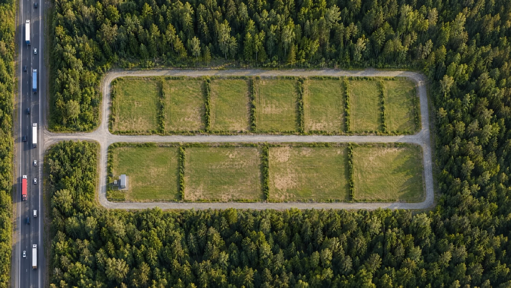

12 октября 2026 · 6 мин
Как продать земельный участок через витрину проверенных участков
Как разместить свой участок на витрине Инвест 47: что мы проверяем перед публикацией, какие данные нужны в заявке и как проходит модерация.
Участки промназначения на 6 км Мурманского шоссе
Листайте вниз - снижаемся к участкам
Визуализация
Мурманское шоссе, 6 км
Промназначение, въезд с трассы Кола, 150 кВт. Продаёт собственник, без управляющей компании.
Из 11 участков продано 8. Остались три - все на одной внутренней дороге, с выездом на Мурманское шоссе.
Наведите или нажмите на участок. Зелёные - свободны, тёмные - уже проданы.

Мурманское шоссе, Колтушское городское поселение. Быстрый доступ к КАД и к Петербургу.
Участки стоят прямо у федеральной трассы - удобно для фур, техники и клиентов.
Мощность уже выделена, подстанция находится на участке. Не нужно ждать техприсоединения.
Никакой управляющей компании и ежемесячных сборов. Участок продаётся с долей в общей дороге.
Вместе с участком вы получаете долю в участке под общей дорогой - подъезд никто не перекроет.
Без посредников и комиссии. Профиль «Инвест 47» на Авито почти 13 лет, данные подтверждены.
Склад. Производство. Техцентр. Логистика.
Категория земель - промназначения. Это земля под бизнес у трассы, а не под дачу. Точный вид разрешённого использования назовём по кадастровому номеру участка и покажем выписку из ЕГРН до сделки.
Расскажите, под какую задачу нужна земля. Подскажем, какой участок подойдёт.
Встретимся на участке, покажем границы, дорогу и подстанцию.
Кадастровые номера, выписка из ЕГРН, право собственности. Проверяйте сами или с юристом.
Договор купли-продажи и регистрация в Росреестре. Участок и доля в дороге переходят к вам.
12 октября 2026 · 6 мин
Как разместить свой участок на витрине Инвест 47: что мы проверяем перед публикацией, какие данные нужны в заявке и как проходит модерация.
1 октября 2026 · 7 мин
Как проходит покупка земельного участка: задаток, договор, способы расчёта, регистрация в Росреестре, сроки, госпошлина и налоги продавца в общих чертах.
22 сентября 2026 · 6 мин
Что такое доля в участке под общей дорогой посёлка, зачем она покупателю, как оформляется в ЕГРН и чем опасен земельный участок без юридического подъезда.
Ленинградская область, Всеволожский район, Колтушское городское поселение, 6 км Мурманского шоссе. Участки стоят у трассы Р-21 «Кола», выезд на неё по внутренней дороге посёлка.
Земли промназначения: под склад, производство, техцентр, логистику. Точный вид разрешённого использования назовём по кадастровому номеру участка и покажем выписку из ЕГРН до сделки.
Да, в посёлке подключено 150 кВт, подстанция стоит на участке у трассы. Не нужно ждать техприсоединения с нуля. Сколько мощности приходится на конкретный участок, расскажем по телефону.
Нет. Управляющей компании и ежемесячных сборов нет. Вместе с участком вы получаете долю в участке под общей дорогой, поэтому подъезд никто не перекроет.
Да. Оставьте номер в форме ниже - договоримся о времени, встретим на участке и покажем границы, дорогу и подстанцию.
Заполните заявку на странице «Продать участок»: где участок, площадь, цена, документы и фото. Мы проверим участок и, если всё подтвердится, опубликуем его с отметкой «Проверено Инвест 47».
Контакты
Ленинградская обл., Всеволожский р-н, Колтушское городское поселение, Мурманское шоссе, 6 км.